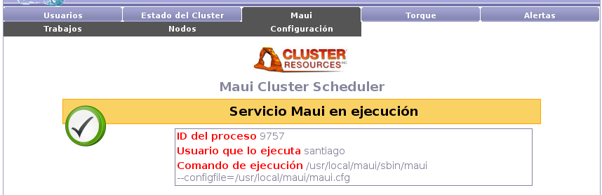

Next: Trabajos Up: Fenton - Manual de Previous: Usuarios - Alertas Contents
Desde la pantalla principal de Maui podemos chequear el estado del servicio de Maui en el nodo maestro del cluster. Es necesario que el servicio de Maui se encuentre en ejecución para poder iniciar nuevos trabajos en el sistema, de lo contrario los trabajos quedaran en cola de espera indefinidamente.

El servicio de Maui no debe correr con el usuario root, debe correr con el usuario configurado como administrador de Maui.